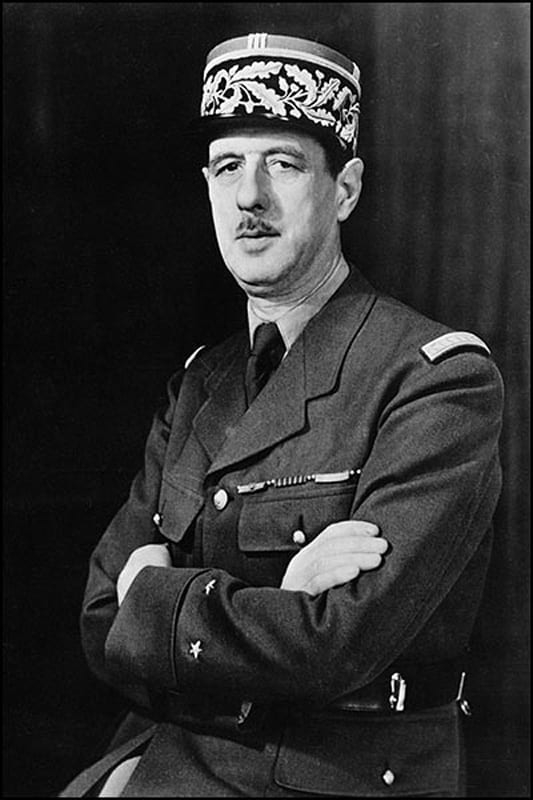

Chef de la France libre – 1940‑1945

Charles de Gaulle (1890–1970) est un militaire et homme d’État français. Refusant l’armistice de 1940, il devient la voix de la résistance extérieure et incarne la légitimité de la France libre.
Après la défaite de 1940, de Gaulle s’exile à Londres et lance l’appel du 18 juin. Il organise la France libre, coordonne les Forces françaises libres et participe aux grandes décisions alliées. Il joue un rôle majeur dans la libération de la France et la reconstruction politique du pays.
De Gaulle est l’une des figures les plus marquantes de l’histoire française. Son leadership durant la guerre, sa vision politique et son rôle dans la reconstruction de l’État ont façonné durablement la France moderne.